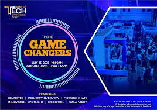
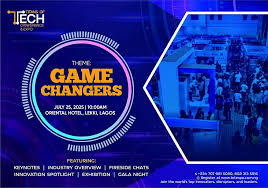
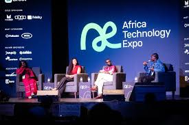

History
TechCon began in 2010 as a small meetup and has grown into a global event hosting over 10,000 attendees each year.
TechCon began in 2010 as a small meetup and has grown into a global event hosting over 10,000 attendees each year.
Our mission is to connect, inspire, and equip tech professionals and enthusiasts worldwide to build the future together.
Jane Doe: AI pioneer and one of Forbes' Top 50 Women in Tech.
John Smith: Cloud computing expert and keynote speaker in 2022.